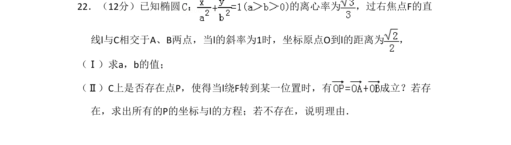
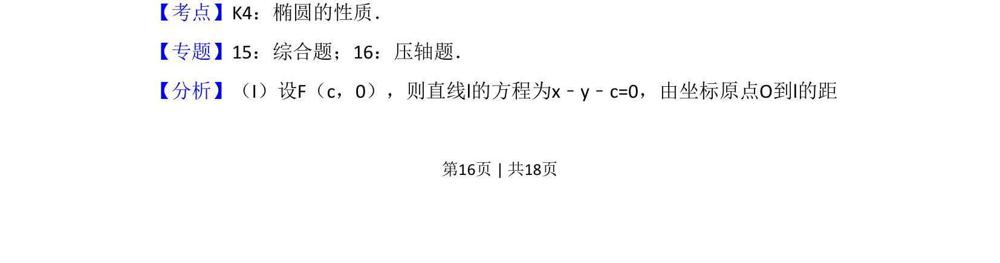
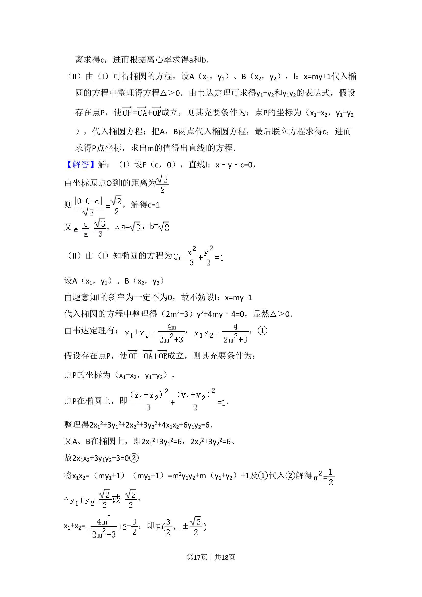
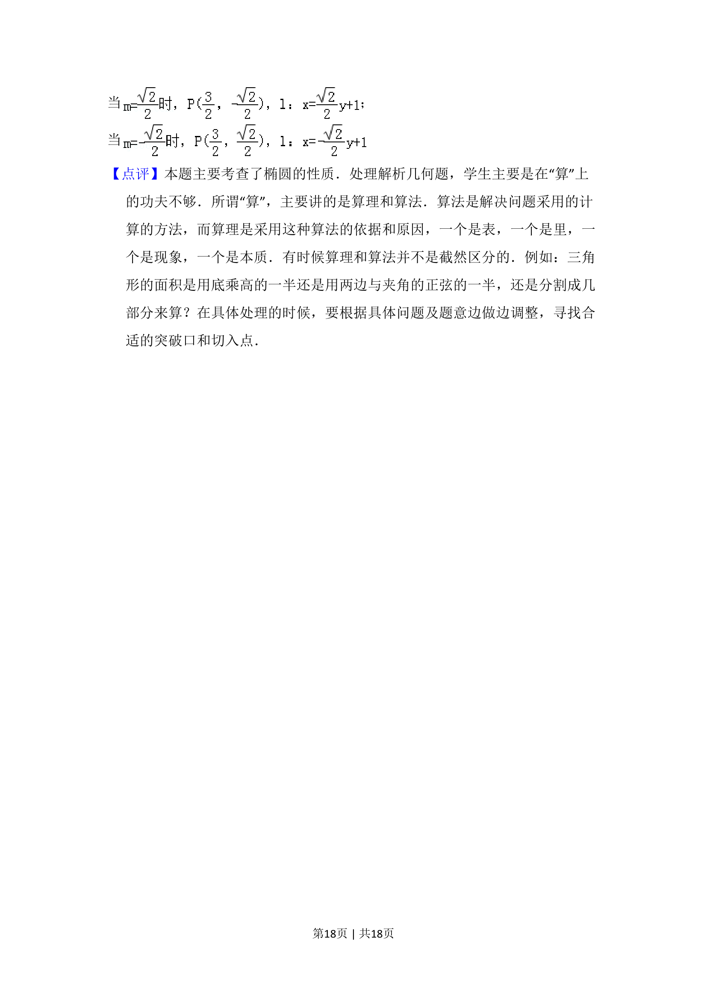

考点：椭圆性质 点到直线距离公式 向量运算 存在性问题

考查椭圆离心率、点到直线距离公式及存在性问题，求椭圆参数和满足向量条件的点与直线。



📄 原 PDF 第 16 页：
素材/真题/吉林/2008-2024·（吉林）数学高考真题/2009年高考数学试卷（文）（全国卷Ⅱ）（解析卷）.pdf
22．（12分）已知椭圆 的离心率为 ，过右焦点F的直 线l与C相交于A、B两点，当l的斜率为1时，坐标原点O到l的距离为 ， （Ⅰ）求a，b的值； （Ⅱ）C上是否存在点P，使得当l绕F转到某一位置时，有 成立？若存 在，求出所有的P的坐标与l的方程；若不存在，说明理由．
【考点】K4：椭圆的性质．菁优网版权所有 【专题】15：综合题；16：压轴题． 【分析】（I）设F（c，0），则直线l的方程为x﹣y﹣c=0，由坐标原点O到l的距